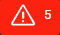

Alarms#
In this article: alarms and what they do. You'll find out what does "acknowledge alarm" mean and what shelved and monitored alarms are.
Briefly about alarms#
Alarms inform you of critical conditions and situations that require human attention or intervention.
Alarms are usually associated with tags. When a tag or several tags register a critical condition, an associated alarm becomes active. There are also system alarms.
Alarms section overview#
The Alarms section allows users to monitor and manage alarms and displays their statistics. On the figure below, you can see one of the Alarms section's tabs:
The section structure contains available to you alarms including those not active at the moment.
In the content area you can see those of alarms that require your attention. The area consists of four tabs:
- All
- Shelved
- Acknowledged
- Monitored
You can switch between them on the panel above.
The view's table contains information such information as:
- Activation time
- Associated tag's name
- Information message (optional)
- State of the alarm
- Alarm priority
- Alarm category
Some of the alarms may have an icon in the Name column. Clicking this icon redirects you to the History Replay mode of the page that is associated with the alarm. The replay of historical data starts one minute before the moment of alarm occurrence and ends at the current moment. Also, in the last column, you can choose one of the available operations:
- Acknowledge
- Shelve and Unshelve
- Start Monitoring
- Manage Comment
The HMI View signals about alarm activation in several ways:
- Colour. The red colour shows that the alarm is active.
- If there is at least one active alarm, the counter  in the interface header becomes red and indicates the total number of unacknowledged alarms.
- Also, the animated badge appears on the section icon on the left. This badge is red if there exists at least one active alarm. Similarly to the counter, the badge indicates unacknowledged alarms.
Acknowledge alarm#
The action acknowledge means that the user confirmed alarm notification.
Let's look at what happens when you acknowledge the alarm:
- If the alarm condition still remains, then notification stays visible in the table. The following scenario occurs:
- The alarm changes its colour to pink
- The number of alarms in the interface header's counter decreases by one. The same thing happens with the badge on the section’s icon
- The alarm appears in the Acknowledged tab
- As soon as the alarm condition is no longer active, the alarm disappears from the table tabs All and Acknowledged. The number of alarms in the interface header's counter decreases by one. The same thing happens with the badge on the section’s icon.
Shelve and monitor alarm#
You can postpone the alarm by clicking the Shelve button. The context menu allows you to set necessary amount of days and hours. The postponed alarm appears in the Shelved tab.
At the occurrence of the alarm, you can add it to the Monitored list by clicking the respective button. The Monitored list displays different sorts of alarms active and inactive, acknowledged and unacknowledged, shelved and unshelved.
The image shows all possible alarm states:
- Red alarm is active and unacknowledged
- Pink alarm is active and acknowledged
- Blue alarm is shelved
- Green alarm is inactive and unacknowledged
- Pale yellow alarm is inactive and acknowledged
Alarms statistics#
Cloud version of the interface can display alarms statistics. Click the Statistics button on top of the section structure to observe consolidated data about alarms.

Parent article:
- ControlMachines™ HMI View
This article observes ControlMachines™ HMI View, here you can read about its structure and common elements.
Related articles:
- Signal watchers
Here you can read about signal watchers and their work principle. Also, the article tells about the parameters of signal watchers. - System alarms
Briefly about system alarms.